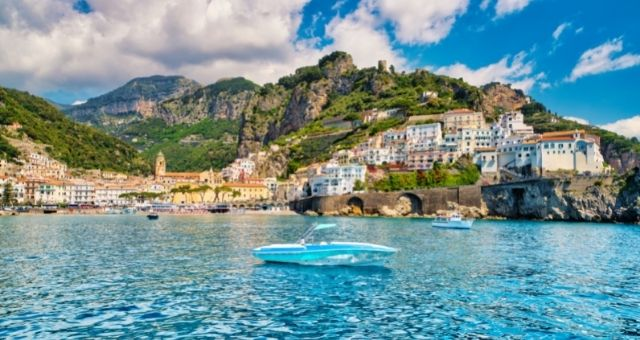

Amalfi Coast
Magically suspended between the blue sky and the iridescent colored sea, the Amalfi coast seems to be born from the palette of a painter who wanted to use the warmer color gradients for creating a landscape that enchants the visitor at the first shot, giving thrilling experience and such evocative view to doubt, for a moment, it is real. It is the land where the sweet scent of lemon blossoms harmonizes itself with the most aromatic one of the Mediterranean vegetation and the acrid aroma of saltiness; where the brilliant colors of the majolica domes, bougainvillea and carnations pergolas give an evident colored touch to the typical whitewashed houses, clinging to the last offshoots of the Lattari Mounts that plunge dramatically into the sea. A vertical landscape, in short, characterized by a picturesque labyrinth of stairways and narrow alleys, connecting the two main elements of this landscape: the mountains and the sea. A continuous succession of headlands and inlets, bays and fjords, interspersed with pebbled beaches and rocks on which you can still see the ancient viceregal towers, the first bulwark of the local population against the Saracen attacks. The shift from the sea to mountain is seamless: the mountain sides were terraced over the centuries, shaped by human labor to create flaps of arable land and already compared, during the Renaissance period, to the legendary Hesperides by the Italian writer and naturalist Giambattista Della Porta. All the towns of the Amalfi coast are connected by the scenic SS. 163 road, built in the first half of the XIX century during the Bourbon period and always considered one of the most beautiful road in Italy. Following the natural course of the coastline, the route is full of curves, nestled between the rock and the sea cliffs, giving new and spectacular shots at the exit of every tunnel or hairpin bend. Before the construction of the coastal road, locals reached all the towns via mule tracks and footpaths, still existing and particularly appreciated by trekking lovers for the stunning views that can be enjoyed.
First Page